A fantasy basketball cockpit that hits like a buzzer-beater and reads like a spreadsheet you actually enjoy. Hot orange for the moment. Cool zinc + blue for the decision.
Real NBA photography, hot-orange glow, a live pulse, big tabular numbers that swing green/red. Reserved for the screens where emotion belongs: your players, a clutch matchup, a trade that just landed.
Dark zinc surfaces, generous whitespace, one accent at a time, quiet borders, blue analytical charts. The frame never competes with the game.
Photos & orange earn their place. If a pixel isn't a player, a moment, or a primary action — it's neutral. Minimalism is what makes the orange hit.
Brand orange + zinc neutrals ship as-is. We add a hotter orange for live/CTA glow, keep the blue chart ramp for analysis, and propose semantic win/loss greens & reds.
✦ = shipped to global.css as --primary-hot and --success (loss reuses --destructive); usable as bg-primary-hot / text-success. Dark --primary was raised to the board value shown here: the board is the authority, the code follows. Everything else is your existing dark-mode token, verbatim.
Photos are the excitement engine — but raw photos fight the UI. Every image runs through one of four treatments so it always lands on a dark zinc base and the orange stays the loudest thing on screen. (Live photos pulled from NBA.com Top-25 of 2025.)
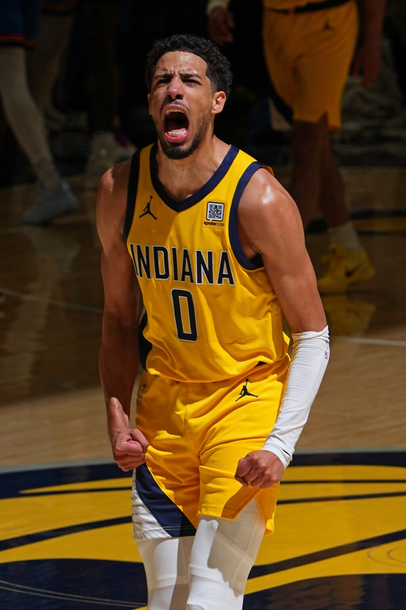
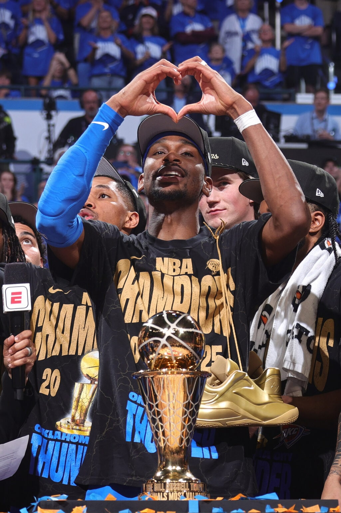
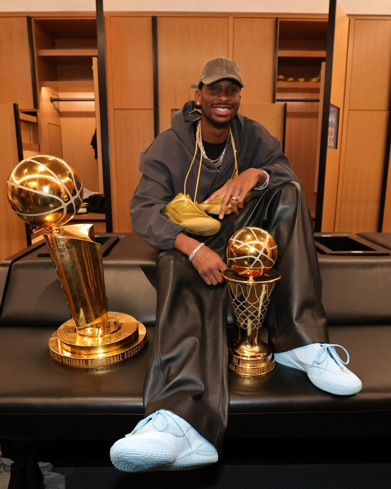
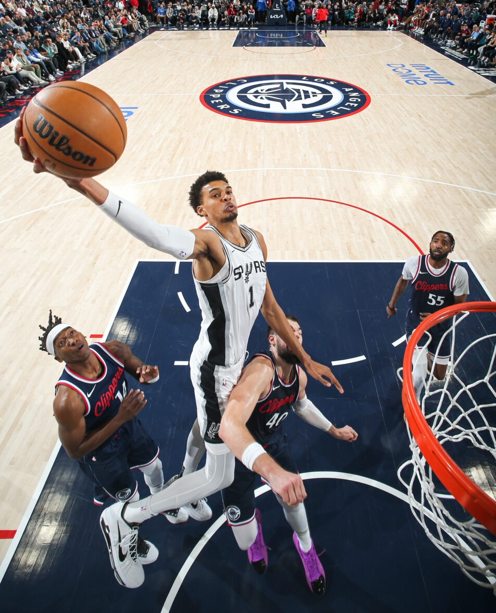
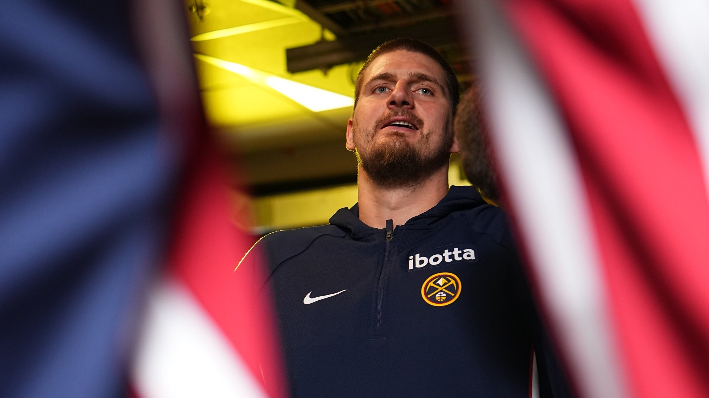
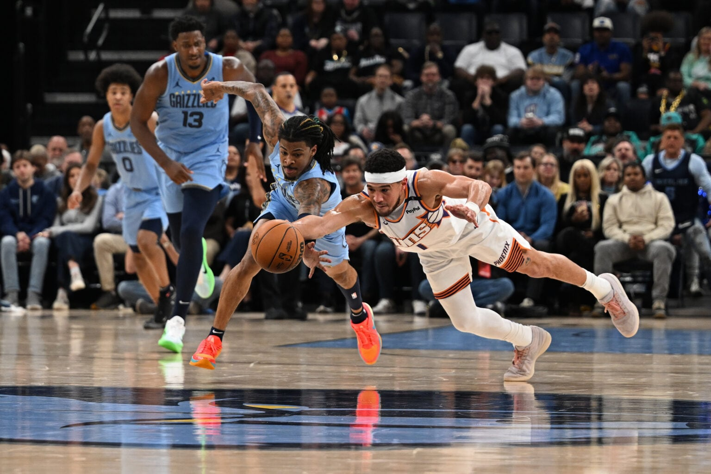
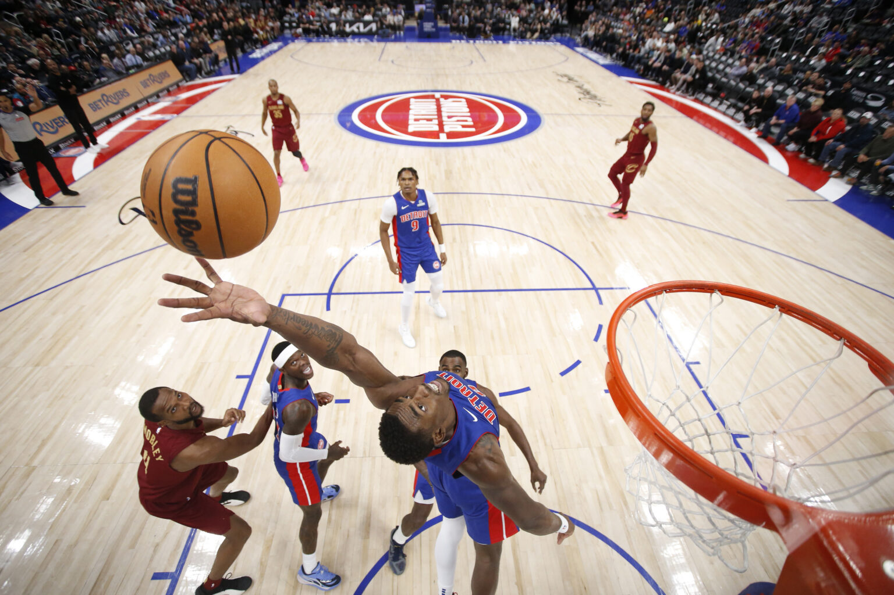
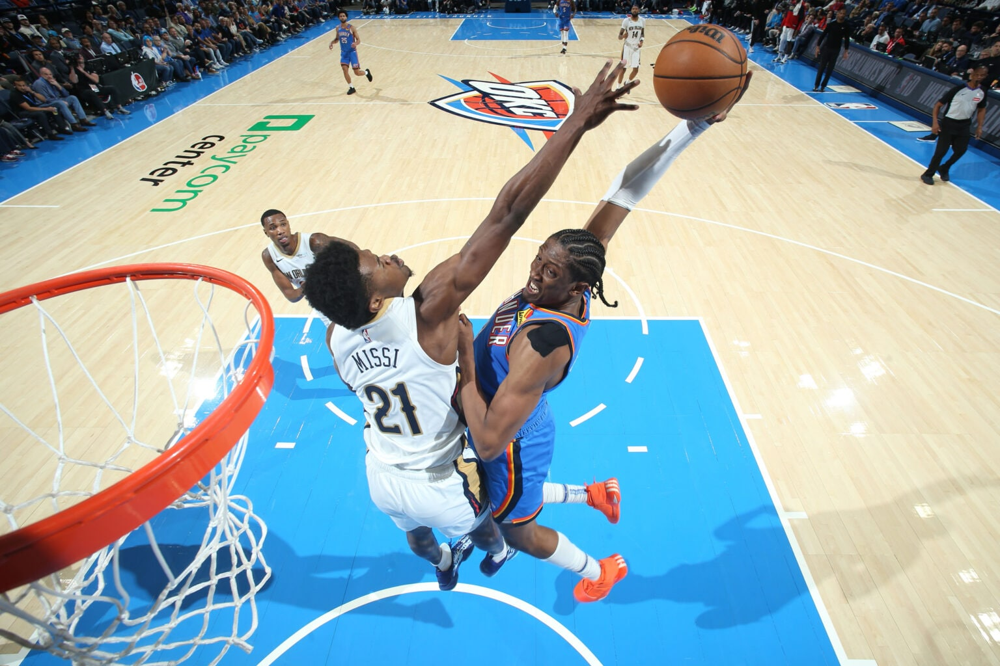
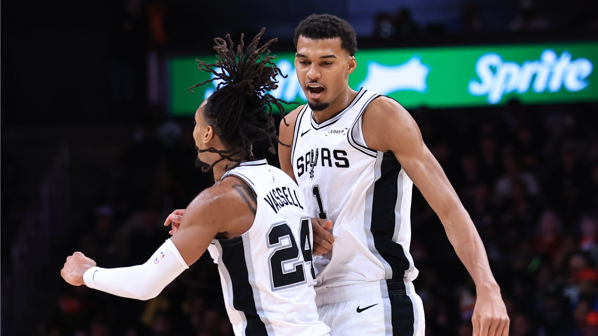
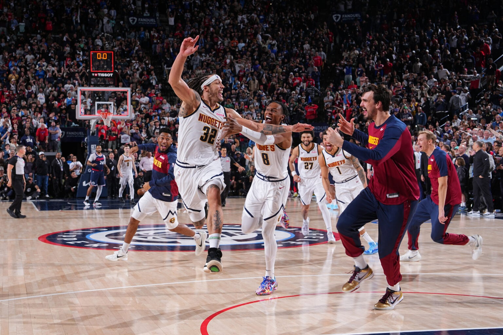
Keyboard note: the strip carries tabindex="0", which is all a scroll box needs for the browser's own arrow keys to move it, so no script is involved. Tab to it and the orange ring shows where you are. The right edge fades and the thin scrollbar stays visible, so it reads as scrollable before anyone touches it. Any real <PhotoStrip> ships the same three things.
Contrast note: the four treatments differ in what they do to the photo, never in what a label sits on. Each label paints its own scrim, opaque --bg behind the text and fading out over the 32px above it, so the sum is the same on all four and at every card size: --fg on --bg, 15.9:1. The check needs no measuring of card heights, only the label's computed background, whose bottom stop must be an opaque --bg. Text that needs to float free of a scrim does not go on a photo.
Production note: the board now loads local copies from design/assets/nba/, downloaded from cdn.nba.com so the board stops breaking when those URLs move. They are reference only and are not cleared for production. Shipping still needs team-licensed or Getty-licensed assets plus a headshot API, served from your own CDN. Always ship a zinc fallback block so a missing photo degrades gracefully.
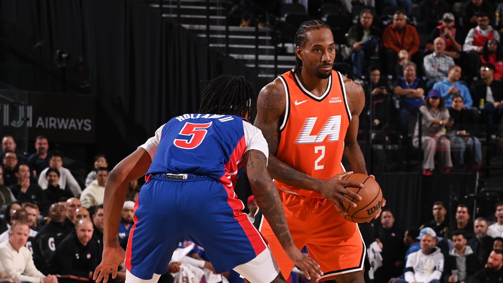
Face-first cards. You see the human before the stat line. Headshot/action photo + name in display weight = instant recognition.
Cool blue charts = analysis mode. One orange bar marks "now". This is a sparkline, so it carries the shape only: the odds are printed above it, the span is named under it, and nothing here waits on a hover. Read the full contract in Charts & data viz.
Quiet rows, tabular game-counts, one decisive colored verb (START / BENCH). Drag-to-set; the layout remains stable under a full bench.
Tab into these two rows to see the focus ring: a 2px --primary outline at 3px offset, on :focus-visible only, so a mouse press never draws it. Every card or row you can tap gets the same ring and nothing else. Drag-to-set needs a keyboard path of its own, and START / BENCH buttons on the focused row are the cheapest one.
FA = orange tag + the one orange CTA on screen. Blue bar quantifies the upgrade. Scarcity feels exciting without being loud.
The verdict is the loudest element: one big signed number + a plain-language judgment. Analysis is blue/neutral; the commit action is the single orange button. The other manager is named above the assets, because you are asking a person, not a market. See League identity.
Most of a season is waiting on games, missing headshots and actions you cannot take yet. These six are the shipped treatments at shipped sizes. Each one names the problem in plain words and says what to do next. Colour is never the only signal, and no state is ever a blank screen.
Your roster is empty. Sign a free agent and they show up here.
Never a blank panel. Icon, the fact in the user's words, one muted line, one orange CTA. The component stays neutral zinc; a screen that wants hype wraps it in a duotone (B) photo.
A 62px roster row loads as a 62px skeleton row: same avatar square, same two lines. The page never reflows when data lands. Rows, cards and lists use Skeleton; a button mid-action uses Spinner instead.
The zinc fallback block the photo rules promise. Same 44px squircle, muted zinc fill, icon or initials. The row keeps its rhythm and the name still does the recognising. A broken image never leaves a hole.
Denver's roster is full. Drop a player from their side, or send it as a 2-for-1.
Darker tint, not a solid red slab. It still reads as a card. The glyph plus the word "Error" (carried for screen readers) mean colour never works alone. Never "Something went wrong": name the cause, then offer the fix.
Disabled is 50% opacity and no pointer events, and it is never silent. One muted line under the control says why, so nobody hunts for a broken button. Same rule for a greyed row or a locked input.
A 1px --ring border plus a 1px ring at 50%. Identical on buttons, inputs, badges, rows and toasts, so the keyboard path never disappears. :focus-visible only: clicking a row does not light it up.
These six are shipped as <EmptyState>, <Skeleton>, <Avatar>'s fallback, <Toaster> / <Toast>, <Button disabled> and the shared focus-visible ring in global.css. Build a screen's empty, loading and failed states in the same pass as its happy path, not after.
A player here is really a contract: a dollar value against your cap, a year number inside a fixed span, and a kind that says what happens to him next season. That is the whole game, so it belongs in the row itself, not behind a click. The vocabulary below is the backend's: kind, year_number, salary, is_ir.
Same 62px row, same 44px avatar, name still doing the recognising. The right rail adds the two facts a keeper league runs on and never shrinks: the salary as a stat (font-heading, black, tabular) and a zinc chip reading kind + Yyear_number/last year. Kinds are the backend's own: RD and RDI (rookie development, years 1–3, international stash), R (rookie 1–3, extension 4–5), V (veteran 1–3), RFA, UFA-20%, UFA-10%, FA.
Three rules the rows above are showing. A last year says so in words — "Final yr" as an outline chip, because a colour alone cannot tell you a contract is about to convert to RFA or UFA. A salary the server sends as null prints "TBD", never $0: a fresh UFA has no number until the veteran auction sets one. An IR contract is off the books, so its dollars go muted and its photo dims, while the name stays full strength — you still have to recognise the guy.
One bar, blue while the roster is legal, because a cap is analysis and not a scoreboard. Going over is the one moment it turns orange, and even then the words carry it: the big number is labelled "over the cap" and a white line marks where the cap sat. Numbers are tabular so twelve teams stack into a readable column.
Real values, from constants: $100 at the keeper deadline, $200 in the preseason, $210 in the regular season, $230 once the FA auction ends. The cap is per team and it can shrink — dropping a contract costs you 20% of its salary. RD, RDI and IR contracts do not count against it.
The rule: one line, ellipsis, and the name is the only thing allowed to lose. The text column carries min-w-0 flex-1 (without min-w-0 a flex child refuses to shrink below its text and pushes the money off the row), the name span carries truncate, and title holds the full name for hover. The avatar, the salary and the chips are shrink-0. Never wrap to a second line: a roster of 22 rows has to keep its rhythm.
Ship these as <ContractChip> (a <Badge variant="secondary"> plus the kind → label table) and <CapBar>. One table maps ContractKind to its abbreviation, its spelled-out name and its last year, so a new kind on the backend is a compile error in the UI, not a silently missing chip.
This league runs on rules a new owner has never met: contracts that convert, a cap that shrinks when you drop someone, two auctions with different clocks. The interface prints that vocabulary in abbreviations — V Y2/3, UFA-20%, GTD, vs proj — and today it prints them bare. So help is not a page we add later; it is three tiers sized to how much explaining a thing needs. A word gets a tooltip. A moment gets one line. A system gets a rules page.
Every abbreviation the app prints carries the words it stands for. A dotted underline marks it, the cursor turns to help, and Tab reaches it — hover is never the only way in.
The rule. An abbreviation may ship only with its tooltip; a bare one is a bug, the same way a blank panel is. Body copy spells the term out the first time it appears and puts the short form in brackets after it, so the tooltip is a reminder rather than the only source. The tooltip carries the words, not a paragraph: anything longer than a sentence is tier 2.
A chip skips the underline — its shape already says it is a term — but it keeps the help cursor, the focus ring and the tooltip. That is the one variation, and it is a render prop rather than a second component, so there is exactly one place an abbreviation's words come from.
One zinc line where the rule bites, not in a FAQ nobody opens. Info glyph, one sentence of real rule, an optional "Learn more" into the matching rules section, and an optional dismiss for the ones that are a first-visit greeting.
A trade goes through the moment every team on it has accepted — there is no league vote. Only the commissioner can undo one, and only in extreme cases. Learn more
Open an auction on a free agent by Friday 11:59pm CT, and bid on open ones until Sunday 8pm CT. Every bid keeps its auction alive another 24 hours, and a bid in the last hour pushes Sunday's deadline out 30 minutes. Learn more
Your cap shrinks when you drop a player mid-season: 20% of his salary, rounded up, gone for the rest of the season. RD, RDI and IR contracts drop free. Learn more
The rule. Zinc, never orange: an explainer teaches, it does not sell, and the one orange thing on screen stays the action. One sentence of a real rule with real numbers — "you may not be able to do this" is not an explainer. Dismissal is the caller's business: the note takes an onDismiss and remembers nothing itself, so a first-visit note and a permanent one are the same component.
Job zero for a new owner is "understand this league's rules", and right now that job has no home in the app. It gets one nav item and one page.
A permanent sidebar item, not a link buried in a settings page. It sits under the same "League" group as Rosters because it is league state, not app help.
A player here is a contract: a salary, a year inside a fixed span, and a kind that decides what happens to him next season.
A rookie sits on RD for up to three years, converts to R on activation, and becomes an RFA after his third rookie season.
Read mode. Contents down the left, short scannable sections on the right, one custom system per section. Every section is written with the same chips, bars and rows the app uses, so reading the rules teaches the interface and the interface reminds you of the rules. Sections are deep-linkable, because that is what every tier-2 "Learn more" points at.
This page is a future route. The tile fixes its pattern only: the nav item, the two-column read layout, and the six sections that are custom to this league. The prose itself is the league rules document, not new writing.
Rule facts on this board are the shipped ones: cap by period and the auction clocks come from constants/src/league_rules/config_settings.rs, the contract kinds from entity/src/entities/contract/contract_entity.rs, and the 20% drop penalty from the league rules document. Help copy that invents a rule is worse than no help at all.
Five blue chart tokens ship and nothing yet says how to spend them. This section is that ruling, written before the first chart is built. Charts here answer two questions. How did this go, and where is it heading. Both get read one-handed on a phone with no pointer anywhere near the screen. So most of what follows is about what a chart says before anybody touches it. Every ratio quoted below is measured against --card, not judged by eye.
The value comes first, top left. The board's stat treatment at 2.6rem, the label band above it naming the measure and the period, the change beside it as a signed number with the period it is measured against. Units are stated once, in that label, and never repeated on the axis or in a tooltip. If a reader only ever looks at the top-left corner, they still got the answer.
Gridlines are horizontal, solid, and --border, white at 10%, which measures 1.33:1 on the card. Present enough to carry your eye across, quiet enough that they never read as data. No vertical gridlines: the x labels already mark the slots. No dashed gridlines ever, because dashed means projection here and nothing else.
The baseline is always drawn, at zero, in --muted-fg at 45%, which measures 2.38:1, about twice the gridline. It is the floor every bar stands on, so it cannot look like one more gridline. A bar chart starts at zero. A bounded rate (odds, percentages, share) starts at zero. Nothing on this board gets a truncated axis.
Axis labels live in the label band: 11.5px, --muted-fg, 6.74:1 on the card, with tabular lining numerals, so a column of ticks lines up and a live-updating value never shifts its neighbours.
Bars cap at 22px with a 4px rounded top and a square foot on the baseline; the leftover slot width stays as air. One direct label only, on the extreme or the endpoint, here the season high. The axis carries the rest, and the readout carries the exact number on demand.
The five chart tokens are one blue hue getting darker: --chart-1 through --chart-5. That makes them a sequential ramp, not a set of categories, and it decides everything below. Adjacent steps mean "more of the same thing", so they can never mean "a different team".
--chart-2, the middle of the ramp, 4.71:1 on the card. --chart-1 is too pale to be the only ink and --chart-3 down is too dark. One series needs no legend: the headline names it.
--chart-1 and --chart-3: 30 apart in OKLab, so anyone can split them. Skip a step, always. Neighbours on the ramp sit 6 to 8 apart and read as one colour. Each line is named at its own end, in text ink, never in the line's colour.
Not by colour. One series in --chart-2, the rest as zinc hairlines (--muted-fg at 65%, 3.59:1). A twelve-team league is never twelve lines. The alternative is small multiples, one small chart per team.
Green and red only when the bar is the verdict: over or under projection, won or lost. The sign and the word carry it (“+14 over”), colour only agrees. A green bar with no label is colour working alone, which is a bug.
Two hard limits, both measured. --chart-4 reads 2.60:1 on the card and --chart-5 reads 2.01:1, under the 3:1 a mark needs. In dark mode they are washes and fills sitting under a label: a heat cell, a stacked area, a band. Never a line, a dot or a thin bar. And the ramp's own neighbours are 6 to 8 apart in OKLab where 15 is the floor for telling two things apart, so the ramp carries at most two series by colour. Adjacent steps are correct for exactly one job: data that is itself sequential, a tier ladder or a heat grid, where the closeness is the meaning.
One orange, and it always means now. Exactly one element in a view wears --primary-hot: the current bar, the latest point, the live marker. It is 40 apart from --chart-2 in OKLab and 6.03:1 on the card, so it lands. It is never a second series, never a hover state, never "the important one". A view with two orange marks has no orange marks.
Dashed means "not measured yet", and only that. A projection renders as a wash of the series token at 18%, a 1px dashed edge top and bottom in the full token, and a dashed centre line in the same 2px stroke the solid line uses. 18% and not the 10% a light surface would take: on this zinc, a 10% blue measures 1.11:1 and disappears. The band starts at the last real point, so the join says where measurement stopped.
The target line is the cap line from Contracts, turned on its side: 1px, --fg at 85%, 12.98:1, and always labelled in words. One per chart, and it is a threshold that matters: the playoff cut, the salary cap, a projection to beat. Zero is not a target line; zero is the baseline and always drawn. Annotations sit inside the plot in the label band, one per chart, and say what a reader would otherwise have to work out.
"Detail on hover" is banned as the only path. Half this app gets read on a phone, and a phone has no hover. So: the current value is printed above the chart at all times, a tap or a click selects a slot and pins its readout in the zinc row under the plot, and the pin stays until another slot is tapped or the row is dismissed. Hover previews the same row without pinning it. It is an accelerator for people with a mouse, never the door.
The tap target is the slot, not the mark. The lit zinc block is both: 45px wide here against a 22px bar, so it takes in the air either side and clears the 24px minimum on the narrowest chart we would ship. It doubles as the selection mark, which is why the selected column needs no outline of its own.
Keyboard, to build with it. The plot is one tab stop, not one per bar. Left and right arrows move the selection, Home and End jump to the first and last slot, Escape clears the pin. The readout row is aria-live="polite", so moving the selection announces the value. Every chart carries an aria-label that states the current value in a sentence, so a screen reader gets the headline without walking the data. Any chart with more than one series also ships a "Show as table" toggle. That is the relief channel when colour cannot do the work.
A season starts with no games in it and a provider that misses weeks. These four are the chart's half of the states section, and the first one is the rule this board most wants kept.
Not enough games yet. A trend needs five.
Under five points there is no chart. Print the values as stats and say why in one line. Two points joined by a line is a trend the data has not earned, and people act on it.
Your season starts Tue 21 Oct. Points land here after the first game.
Zero points is the empty state, at the chart's own height, so the card keeps its size and the page does not jump when week one lands.
One Skeleton at the chart's exact height, plus one for the headline value, so nothing reflows. Never a spinner. On a refetch there is no skeleton at all: the old chart holds at 60% opacity until the new one lands.
Week 10 has not arrived from the stats provider. The chart is showing weeks 1 to 9. Retry
A partial failure is an ExplainerNote above the chart, naming what is missing and what is still on screen. A chart missing one week does not become a blank card, and it never quietly draws nine weeks as if that were all of them.
28px in a roster or standings row, always to the left of the number it describes, always the same eight weeks across every row so the shapes compare.
48px in a stat tile, beside the value, with the span named underneath. The orange dot is the one-orange rule doing its job: last point, and it means now.
What a sparkline keeps: the shape, a last-value dot at r=3 with the 2px card ring, and the orange now-marker when the last point is live. The same 2px stroke and the same --chart-2 as a real chart, so the two never look like different systems.
What it drops: axes, gridlines, the baseline, tick labels, tooltips and interaction of every kind. A sparkline is not clickable and never carries a hover. It is a shape, and shapes do not need to be tapped.
Two heights, and nothing else. 28px in a row, 48px in a stat tile. Past 48px it is a chart and owes the reader an axis. Every sparkline sits next to a printed current value: the sparkline is the adjective, the number is the noun, and it never holds the only copy of a number.
Where it may go: row-level trends in a roster, standings or free-agent table, and the trend slot of a stat tile. Where it may not: anywhere the reader has to judge how much. Trade value, cap space, auction bids, playoff odds on their own screen. Those are decisions with a magnitude in them, and they get a real chart with an axis and a readout.
Ship as <Chart> (axis, baseline, band, readout, keyboard selection) and <Sparkline>, both feeding ron.12. The chart chrome (gridline, baseline, target line, band opacity, context hairline) lives in one place and is never picked per chart. Contrast figures here were computed against --card, not judged by eye.
Auctions are the loudest thing the backend does, and the board has never drawn one. A bidder needs four answers at a glance: how long is left, what the bid stands at, who put it there, and how much of my cap survives if I go over the top. Everything else on this screen is furniture. This is the home of --primary-hot and the live pulse: they mark time running out, and they are not allowed anywhere else on the screen.
Your cap remaining is $24, so $24 is the highest bid you can place. A team cannot bid past its own cap, and the disabled button says which number stopped it.
$25 puts you $1 over the $210 in-season cap.
Colour is the only thing that changes. The digits keep one size and tabular widths, so the row never jumps while you are reading it. Only the last tier pulses, and the pulse is the same .live-dot the pill uses, so prefers-reduced-motion already turns it off.
What the clock counts to comes from config_settings.rs, not from the design: a bid keeps an auction alive another 24 hours, in-season auctions all end Sunday 8:00pm CT, and a bid in the last hour pushes that end out 30 minutes. In the preseason crunch window a bid buys one hour, not 24. A clock that can move has to say so before it moves, so the card prints the closing time next to the pill.
A bid is a person, not an amount. Every line carries the manager's name and his team, because "outbid by Dave" is what makes anyone come back and bid again. Beaten bids stay on the list at 65% and keep their number: the history is the reason the price is where it is.
The list is a roster row with a clock and a price bolted on, so it inherits the 44px avatar and the truncating name column. One orange clock at a time: the row closest to closing is hot, every other clock is zinc, and the standing of your own bid is a chip, not a colour. An auction with no bids yet prints the $1 opening floor rather than an empty cell.
Bid amounts, the $210 in-season cap, the $1 opening floor and every window quoted here come from constants/src/league_rules/config_settings.rs and the league rules document. The screen never computes cap remaining itself: it reads salaryCap.salaryUsed from the server, which already subtracts IR and applies the 20% drop penalty.
Everything the board has drawn so far would fit any fantasy product: players, salaries, charts, a clock. What makes this one yours is that the league has twelve seats and you know who sits in every one of them. A name on a trade, a name on a bid, a name in the feed. Where a screen can say a manager instead of a team, it says the manager.
A fixed roster of twelve managers, each with a team name they chose. There is no headshot API for the people in the league, so the initials fallback on zinc is the design, not a gap waiting for a photo. Your own seat carries the orange edge, and it is the only orange in the grid.
Two initials, never one, and never a full name inside a 36px square. The grid wraps at 190px, so twelve seats stack one per line on a phone and sit six across on a desktop. It never becomes a horizontal scroller: a manager you have to scroll to find is a manager you forget.
Dave has three players left to play tonight, you have one. A matchup card that hides that is lying about the score.
Two equal columns and a divider in the middle. Neither side is the hero: the reader is one of them and already knows which. Only the leading score takes the green, and it takes it because it is winning, not because it is yours.
Rivalry is memory, not decoration. Two or three real past events, each with a date and a number, beat any badge that says RIVAL. Every square in the strip carries its letter, so the green and red are never the only thing saying who won.
One sentence per event, always starting with the manager who caused it. This is the feed that makes the league feel occupied when you open the app and nothing of yours has changed.
Your own entries read "You", never your team name, and they carry no colour: the feed is a record, not a notification. Amounts stay tabular so a column of money lines up while you scan it. An entry that involves two managers names both of them, in the order it happened.
Every one of these uses parts the board already has: the avatar fallback, the truncating name column, chips, and the win/loss colours. The layer is new, the components are not.
Every pattern on this board has one home in src/components/ui. Nothing here is a new one-off: if a row says "to build", build it once as a component, not inline.
| On this board | Ship as | Status |
|---|---|---|
h1 · hero headline | <Typography variant="display"> | Shipped |
h2 · section title | <Typography variant="heading1"> | Shipped |
h3 as used · muted .8rem label | <Typography variant="section-label"> | Shipped |
.eyebrow | <Typography variant="eyebrow"> | Shipped |
body copy · .muted | <Typography variant="body" | "muted" | "inline-muted"> | Shipped |
.num-tabular · any stat | <Typography variant="stat">, size it at the call site | Shipped |
.btn-primary | <Button> (variant default) | Shipped |
.btn-outline | <Button variant="outline"> | Shipped |
.tag | <Badge variant="secondary"> | Shipped |
.tag.fa · orange tint | <Badge> with a 20% primary tint variant; today's default is solid | Shipped |
.pill + .live-dot | <Badge> full-round variant, pulsing dot as a child | Shipped |
.card · .pad | <Card> · <CardContent> | Shipped |
.ava · 44px, 10px squircle | <Avatar size="lg"> at 44px | Shipped |
.row | <Stack direction="row"> | Shipped |
.bar · value bar | Progress | Shipped |
.chart · axis, baseline, band, readout | <Chart>: chrome, ramp, reference marks and tap-to-pin all fixed by Charts & data viz | To build |
.spark · trajectory bars · .spark-line | <Sparkline>: bars or line, 28px in a row / 48px in a tile, no axes, no interaction. Subset rules in Charts & data viz | Shipped |
.chart-readout · the value a tap pins | part of <Chart>, never a standalone tooltip; aria-live="polite" | To build |
.t-scrim .t-duo .t-spot .t-cool | PhotoTreatment classes (A to D) | Shipped |
.st-empty · empty state | <EmptyState icon title description action> | Shipped |
.sk · loading row / card | <Skeleton>, sized to the row it replaces | Shipped |
.st-ava-fallback · missing headshot | <AvatarFallback> with icon or initials on zinc | Shipped |
.st-toast · error / success toast | <Toaster> once at the root, then toast.add({ type: ToastKind.Error }) | Shipped |
| in-flight button glyph | <Spinner> + disabled. Never for a list, that is Skeleton | Shipped |
.btn-disabled + reason line | <Button disabled> + <Typography variant="muted-sm"> | Shipped |
.st-focus · focus ring | shared focus-visible ring in global.css, no per-component ring | Shipped |
.tag as V Y2/3 · contract chip | <ContractChip kind yearNumber> — <Badge variant="secondary"> over the ContractKind table in lib/contract.utils.ts | Shipped |
.tag.outline · "Final yr" | <Badge variant="outline">, shown when isFinalContractYear(contract) | Shipped |
.st-salary · row salary | <Typography variant="stat">, muted when contract.isIr | Shipped |
.capbar · salary vs cap | <CapBar salaryUsed salaryCap> on top of Progress — same component as .bar, feeds ron.12 | To build |
.auc-clock · countdown, three temperatures | <AuctionClock closesAt>: zinc over an hour, white under an hour, --primary-hot and pulsing under five minutes. Rules in Live auction | To build |
.bid-row · one bid, one manager | <BidHistory bids>: avatar, manager, team, amount. Beaten bids stay at 65% and keep their number | To build |
.bid-field + disabled CTA | <BidField max=capRemaining> — <Button disabled> plus the reason line, same pattern as every other blocked action | To build |
.mgr · one manager, avatar and team | <ManagerCard managerId>: initials fallback, name, team, orange edge when it is you. Rules in League identity | To build |
.feed · league activity | <ActivityFeed events>: one sentence per event, manager first, tabular amounts, "You" for your own rows | To build |
.h2h + .hist · matchup and record | <MatchupCard>: two equal sides, green on the leading score only, past meetings as lettered squares | To build |
.st-name · truncating name column | min-w-0 flex-1 wrapper + truncate + title. No component, it is a rule | Shipped |
.hlp-term · tier 1, dotted abbreviation | <TermTip label> — .term-tip span by default, render for a chip trigger. Glosses live in lib/terms.ts | Shipped |
.hlp-expl · tier 2, inline explainer | <ExplainerNote action onDismiss> — the caller owns where "dismissed" is stored | Shipped |
.hlp-rules · tier 3, League rules page | Route /league/rules + a <SidebarMenuItem> in LeagueMenu; sections are the deep-link targets for every "Learn more" | Shipped |
Density ruling: the board's row density is canon: 44px avatars, 1rem row text, ~62px rows. The compact h-8 / text-xs era is over. Where the board and global.css disagree, the board wins and the shipped class changes.
Live state, primary CTA, "now" marker, FA availability, your team. One per view, ideally.
All charts, projections, value bars. Cool by design so it never competes with brand orange.
Up/down, win/loss, gain/loss vs projection. Tabular numerals only. Every color-coded state also carries a word or a sign glyph, never color alone.
Surfaces, borders, secondary text. Whitespace is a feature. Quiet by default.
Players, matchups, hype. Always treated (A–D). Never raw, never load-bearing for legibility.
A single pulse on "live". Fast, ≤200ms transitions. Numbers count up on change. No bounce, no confetti.
Empty, loading, missing, failed and blocked ship with the happy path, not after it. Name the problem in plain words, then give the way out. A blank panel is a bug.
A salary is a fact, not a verdict: neutral stat type, tabular. Contract chips are zinc too. Colour arrives only when the number becomes a state — over the cap, a trade's net value, a win or a loss.
A word gets a tooltip, a moment gets one zinc line, a system gets a rules section. Nothing in between: a tooltip that grew into a paragraph belongs on the rules page with a "Learn more" pointing at it. No abbreviation ships bare.
The current value is printed before anyone touches anything. A tap pins a point's readout, hover only hurries it, and "detail on hover" alone is a bug on a phone. Fewer than five points is not a trend: print the numbers instead.
The rounded ramp is canon: 6px on chips, 8px on controls, 10px on cards and buttons, 10px squircle avatars, full-round pills. Nothing ships square.